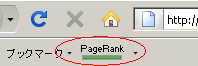

ページランクの上がりやすい無料ブログ？
最近グーグルのページランクが更新されたようで、いつものブログと何か違うっていう人もいるようです。
ページランクが上がったからといって必ずしもアクセス数が増加するわけでもないものですが、一般的にはやはり、インデックスされるページ数が多くなったりします。
結果として検索でヒットする確率が上がったり、上位表示されやすいということもあり、アクセス数増加のひとつの要因にはなりえます。
不自然なブログの作り方をしていないかぎり、ツールバーのグーグルのページランク数値によって、ある程度のブログ構成のよしあしがわかるので、SEO的にも大切なのではないかなと思います。
現在のある程度のグーグルページランクはグーグルのツールバーをインストールすれば簡単にみることができます。
グーグルのツールバー（※サービス終了）

グーグルのページランクの使い方としては、似たようなA、B、Cというコンテンツがあって、Aのページを上位に表示させたいのに、B、Cのページランクの方が高かったとしたら、被リンク構造が間違っていたりすることが多いです。
その場合、A、B、C間の被リンク構造を見直すことによって、本来上位に表示させたいAのページを検索結果に導くこともできるかと思います。
または、ページランクがついていない場合、そのコンテンツには不快なキーワードがあったり、スパムサイトへ発リンクしていないかなどをチェックしてみるといいと思います。
もしくは、何気ない記事のページランクが４とかついている場合は、ブックマークなどで人気になっているとか、何らかの要因はかならずあるものです。
そのようなページごとのチェックのヒントを割と簡単に得ることができるので、グーグルのツールバーはインストールしておくことをおすすめします。
ただ、関連のない不自然な相互リンクやスパムサイトから被リンクを受けても、ページランク自体はあがる印象がありますが、そのせいで逆に順位が下落することもあったりで、高ければいいというものでもないかと思います。
今回のページランクの更新でわたしが思ったのは、無料ブログのなかでもページランクの上がりやすいブログと上がりにくいブログがあるということです。
また、記事の書き方によってもページランクの上がり方にかなりな違いがあるように感じます。
楽天ブログとはてなブログはＰＲ高め？
わたしの無料ブログのなかで、今回ページランクが２つ上がったのが無料ブログでふたつ、ＨＰでひとつあったのですが、その無料ブログは楽天ブログとはてなブログでした。ちなみにＨＰはヤフーです。
このふたつはなぜでしょうか、ほかの無料ブログではだいたいひとつぐらいの上昇しかないのに比べると、ページランクが上がりやすいブログのような気がします。
どちらもサブディレクトリ型で、割と古くからあるブログレンタルですが、サブドメインよりもサブディレクトリ型の方が同一サイトと認識されやすいので、ブログ本体からのリンクジュースが移行されやすいのかなという気もします。
それとも気のせいでしょうか、ちょっとわかりませんが、そのふたつの無料ブログを読み返してみると、だいたいこんな記事の書き方をしていたようです。
- 関係のないリンクは貼らない。
- 引用せず１００％オリジナルな文章。
- 外部リンクを貼るのは３記事にひとつぐらい。
- 記事はかなり長めの記事。
- アフィリエイトをしない。
- １週間に一度は更新する。
これはページランクを上げる要素にはなるのかどうかはわかりませんが、外部からの被リンクほぼゼロの状態だったので、けっこう長めの文章がよさそうな気がします。
外部リンクがなくてもページランクが上がっているので、つまるところは、タグからのリンクジュースとか、カテゴリ新着のページランクから移行されたのだろうという気もします。
シーサーブログの場合もけっこういい方だと思いますが、無料ブログによっては結構上がりづらいところもあるようです。
ブログパーツなどの雑音が多いブログレンタルやタグや新着ページ、ランキングシステムがないブログレンタルはあんまりみたいのようです。
このブログは下がるかな？と思っていたのですが、そのまんまだったのでよかったなって思います。けれども、２つ上がったものは案外、すぐに落ちやすい印象があるので、やはりこつこつと更新していくのが一番だなって思います。
ちなみにグーグルのページランクはツールバーをインストールすればブラウザ上にだいたいの表示が出てきますが、更新される周期は３ヶ月ぐらいだったかと思います。
- ページランクと無料ブログのＳＥＯ
無料ブログやホームページのＳＥＯでよく言われているのはやはり、ページランクとＳＥＯはそれほど関係がないということのようです。 ＳＥＯ対策をしてページランクが上がったとしても、やはり、アクセス数が上が... - ページランクの流れるリンク
グーグル(google)特有のページ評価機能のページランクですが、これはどのような法則があるのでしょうか。 やはり、グーグルのページランクなるものが高ければ高いほどアクセス数が増加しそうな気もしちゃ... - グーグルのページランクと上位表示
グーグルの機能にはページランクというのがあるようで、ページランクでそのページの重要度を評価しているようです。このページランクのページというのは記事の「ページ」という意味もあるようですが、グーグル創業者...